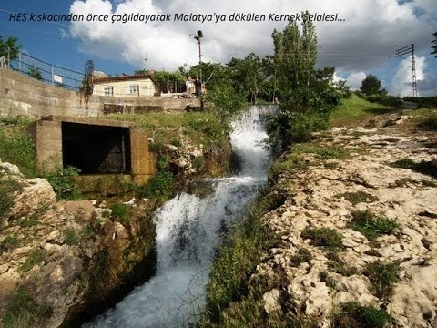
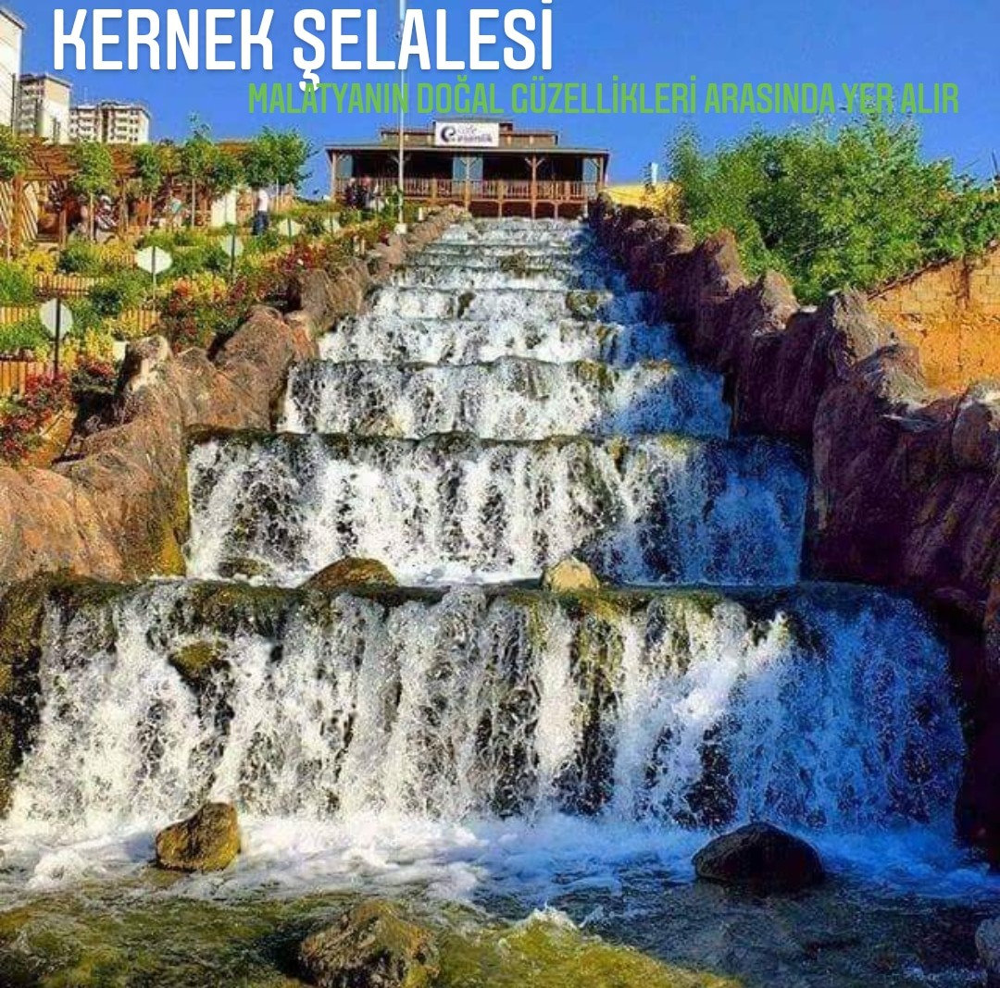

Kernek Şelalesi
Malatya’nın tarihi durmaksızın kanal boyundan en büyük şahidi Malatya müzesine akıyor. Şelalenin coşkusu kernek meydanına düşüyor. Müzedeki 15 bin eser, kernek camiinin huzuru, geçmişin yazılı kanıtlarıyla halk kütüphanesi, geleceğimizi yazacak olan çocuklarımız için oyun alanı, soluklanacağınız kafeteryalar ve elbette ki birbirinden lezzetli yöresel yemekleri tadabileceğiniz restoranlarıyla kernek meydanı hepimize kucak açıyor.
ESKİ HALİ
YENİ HALİ
